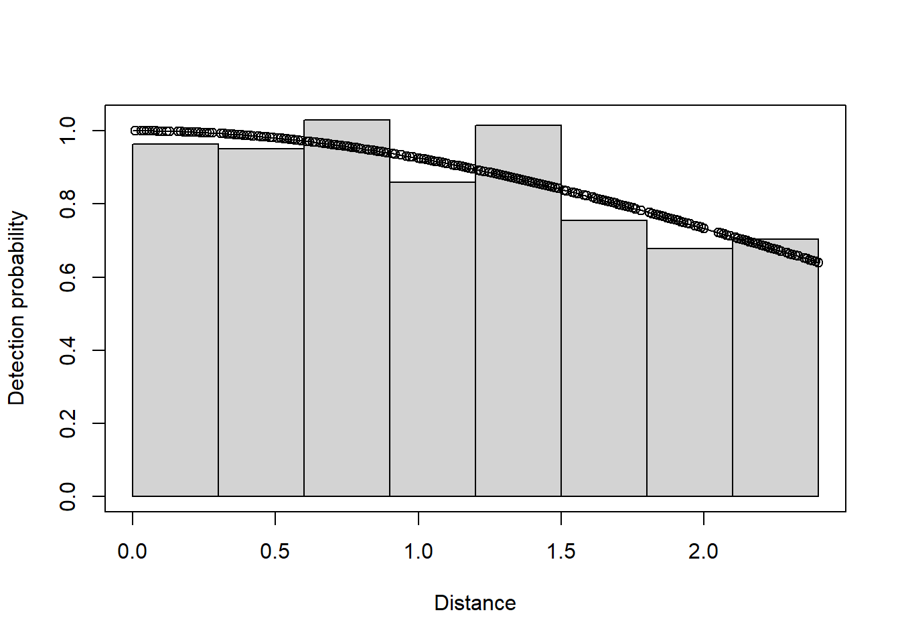

Fit the three models using proper units of distance measure.
The answer is another function convert_units. Arguments to this function are
distance_units
units of measure for perpendicular/radial distances
effort_units
units of measure for effort (NULL for point transects)
area_units
units of measure for the study area.
conversion.factor <-convert_units("Meter", "Kilometer", "Square Kilometer")# Half-normal with no adjustmentsnest.hn <-ds(ducknest, key="hn", adjustment=NULL,convert_units=conversion.factor)summary(nest.hn)
Summary for distance analysis
Number of observations : 534
Distance range : 0 - 2.4
Model : Half-normal key function
AIC : 928.1338
Detection function parameters
Scale coefficient(s):
estimate se
(Intercept) 0.9328967 0.1703933
Estimate SE CV
Average p 0.8693482 0.03902051 0.04488479
N in covered region 614.2533225 29.19681554 0.04753221
Summary statistics:
Region Area CoveredArea Effort n k ER se.ER cv.ER
1 Default 12.36 12.36 2575 534 20 0.2073786 0.007970756 0.03843576
Density:
Label Estimate se cv lcl ucl df
1 Total 49.69687 2.936724 0.05909274 44.2033 55.87318 99.55677
In addition to the half normal key function, fit uniform and hazard rate models with possible adjustment terms.
The goodness of fit for the basic model is shown below.
gof_ds(nest.hn, plot=FALSE)
Goodness of fit results for ddf object
Distance sampling Cramer-von Mises test (unweighted)
Test statistic = 0.0353634 p-value = 0.955416
Contrast competing models
A function useful for contrasting models is summarize_ds_models. A summary table of goodness of fit statistics for all models is created below.
# Summarise gof statisticsknitr::kable(summarize_ds_models(nest.hn, nest.uf.cos, nest.hr.herm, output="plain"), caption="Model results for ducknest data set.", digits=3)
Model results for ducknest data set.
Model
Key function
Formula
C-vM \(p\)-value
Average detectability
se(Average detectability)
Delta AIC
nest.hn
Half-normal
~1
0.955
0.869
0.039
0.000
nest.uf.cos
Uniform with cosine adjustment term of order 1
NA
0.821
0.846
0.044
0.346
nest.hr.herm
Hazard-rate
~1
0.981
0.889
0.050
1.660
Density estimates from the competing models
The density results from all models are summarized below.
Density estimates and confidence intervals for three fitted models.
Model
DetectionFunction
Density
LowerCI
UpperCI
1
Half-normal, no adjustments
49.70
44.20
55.87
2
Uniform, cosine adjustments
51.04
44.92
58.00
3
Hazard rate, no adjustments
48.59
42.52
55.54
Visualise shape of key functions with duck nest data
The detection function plots are shown below.
par(mfrow=c(1,3))plot(nest.hn, nc=8, main="Half normal, no adjustments")plot(nest.uf.cos, nc=8, main="Uniform, cosine adjustments")plot(nest.hr.herm, nc=8, main="Hazard rate, no adjustments")

The half-normal detection function with no adjustments has the smallest AIC which provides support for this model. The \(\Delta\)AIC values for all three models is small. In general, you should get similar density estimates using different detection function models, provided those models fit the data well, as in this example.